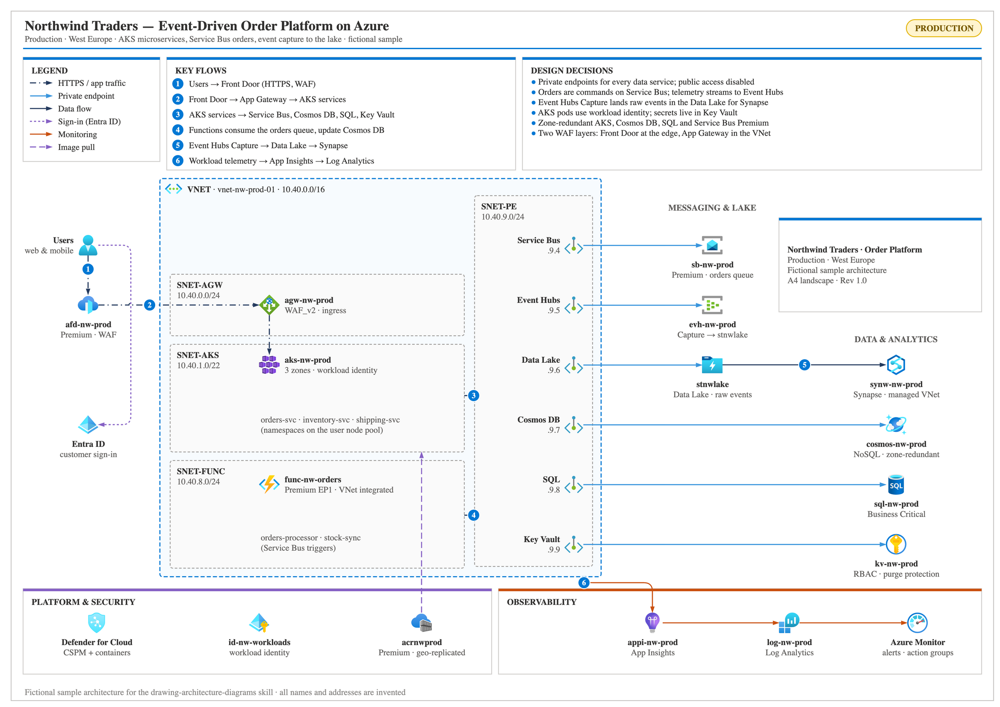
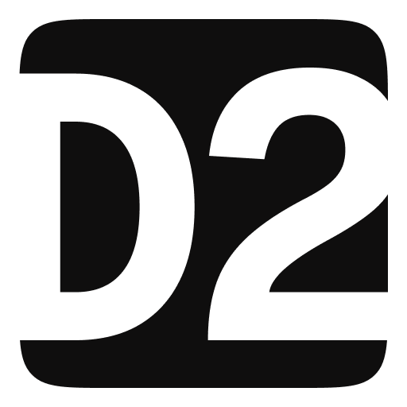

render → northwind.png · A4This document describes the proposed network security design for the Contoso pre-production web applications — the currentapplications. It covers the current configuration, the target design and the changes needed.
The configuration was read with the Azure CLI using read-only accessis described as of 24-Sep-2026. Three spoke VNets peer to a central hub.
We recommend a robust approach that leverages Application Gateway with WAF for internet traffic; internaltraffic. Internal traffic stays on private endpoints.
Note. The cloud team applies each change in an agreed change window.

Keen Skills